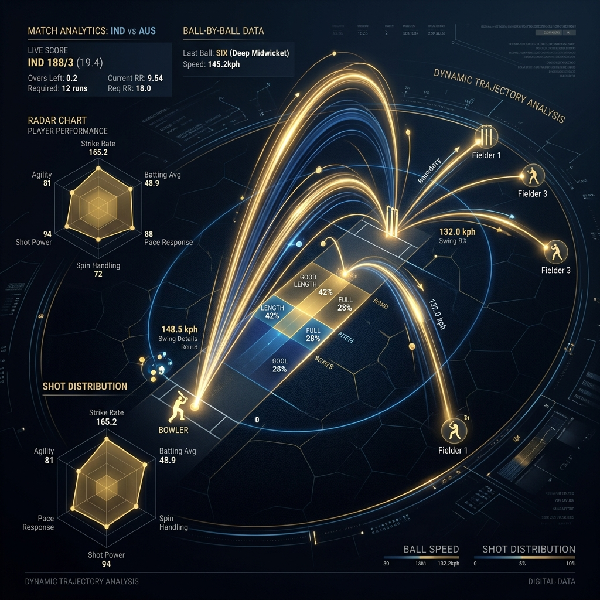

I don't just
analyze data.
I shape stories.
B.Tech Computer Science student specializing in Data Science. Harnessing the power of Python, SQL, and PostgreSQL to transform raw complexity into luxury digital intelligence.
Bridging data science & creative execution.
I am Paras Yadav, a Data Science enthusiast currently pursuing my B.Tech in Computer Science Engineering (Data Science) at CGC Landran. My core expertise lies in designing database architectures, performing deep-dive exploratory data analysis, and architecting data visualizations.
I focus on writing optimized database schemas, writing complex window functions and CTEs in PostgreSQL, and cleaning unstructured datasets with Pandas and NumPy. I bring data models to life through high-fidelity visual representations.
My Technical Ecosystem.
Programming & Databases
Data Analytics & Tools
Education & Milestones.
B.Tech in Computer Science Engineering (Data Science)
Acquiring advanced foundations in object-oriented programming, data structures, linear algebra, statistics, and machine learning pipelines. Specializing in analytical structures and database design schemas.
Relational Database & Data Pipeline Architecture
Pioneering normalization strategies and data ingestion processes. Designed normalized schemas for educational databases and mapped funding cycles of global corporate startups.
Exploratory Data Analysis Projects
- Processed and cleaned diverse sports datasets (IPL cricket stats) and entertainment ratings (Anime catalogs).
- Created statistical visualization panels in Python using Matplotlib and Seaborn, extracting key density highlights and correlation maps.
Selected Case Studies.
PostgreSQL Student System
A highly normalized, multi-entity relational schema spanning students, enrollments, course catalogs, performance marks, and attendance schedules. Features optimal primary/foreign key configurations and constraints.
Unicorn Startup Analysis
Exploratory data analysis of global unicorn startups. Cleaned missing variables and resolved formatting inconsistencies in Python, executing multi-dimensional analytics to extract geographical valuation shifts and funding trends.

Cricket IPL Analytics
Cleaned and aggregated longitudinal IPL match indices. Built statistical panels modeling match results, run trends, and player consistency vectors, yielding clear historical league conclusions.
Anime Dataset Analysis
Analyzed rating systems and popularity behaviors across an expansive media catalog. Structured genre categorizations and investigated statistical distributions connecting production value, rating indices, and viewer volume.
Interactive Skill Ecosystem.
Hover or drag across the outer orbits. Node connections map the architecture of Python-based extraction feeding into SQL schemas and analytical reports.
DATA
SCIENCE
Core Competencies & Services.
Database Architecture
Designing and implementing normalized relational database structures in PostgreSQL. Drafting secure tables, schemas, views, primary/foreign key relations, and indexing configurations to guarantee sub-millisecond execution speeds.
Exploratory Analytics
Parsing raw datasets to extract critical patterns, handle anomalies, and filter statistical outliers in Python using Pandas, NumPy, and Scipy. Bridging commercial numbers with statistical truth.
Premium Data Viz
Building analytical dashboards and high-fidelity reporting plots using Matplotlib and Seaborn. Blending data aesthetics with clear presentation to instantly reveal organizational highlights to decision makers.
Peer Evaluations.
Paras consistently demonstrates an outstanding grasp of relational database architectures. His Student Management System implementation displays structural integrity far beyond academic expectations.
The Startup Unicorn Analysis delivered clear, actionable insights backed by highly robust, clean code. Paras handles complex data cleaning tasks in Python with impressive speed and precision.
His analytical plots don't just display raw numbers; they establish narrative structure. The IPL and Anime case studies show a strong talent for visual data storytelling.
Paras consistently demonstrates an outstanding grasp of relational database architectures. His Student Management System implementation displays structural integrity far beyond academic expectations.
The Startup Unicorn Analysis delivered clear, actionable insights backed by highly robust, clean code. Paras handles complex data cleaning tasks in Python with impressive speed and precision.
His analytical plots don't just display raw numbers; they establish narrative structure. The IPL and Anime case studies show a strong talent for visual data storytelling.
Let's create something amazing.
Seeking Data Analyst or Data Science internships where I can apply my analytical skills and help organizations build data pipelines.